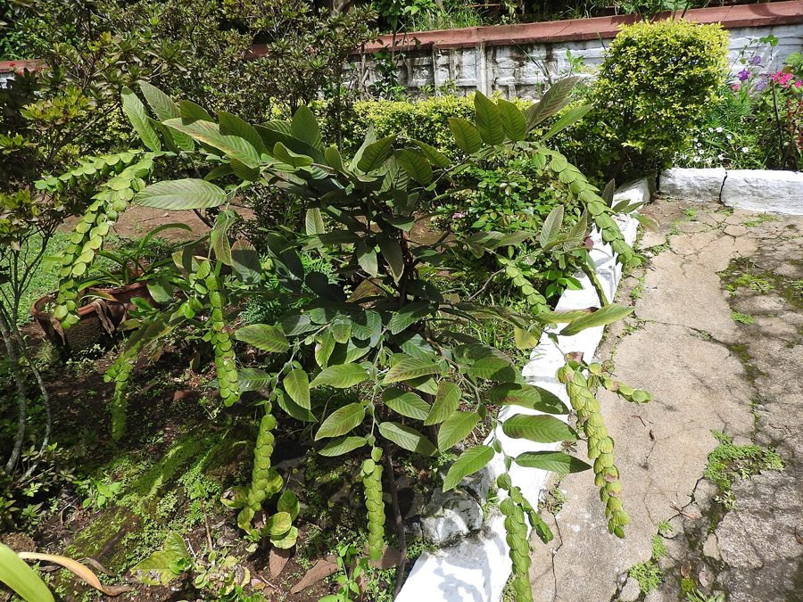

लवली फिलोडियमLovely Phyllodium
Phyllodium pulchellum · Fabaceae · FLR-0365

- Scientific name वैज्ञानिक नाम
- Phyllodium pulchellum (L.) Desv.
- Family कुल
- Fabaceae
- Hindi हिंदी
- लवली फिलोडियम
- Local names स्थानीय नाम
- lovely phyllodium, lavli phillodium, phyllodium
- Status here यहाँ की स्थिति
- native
- Movement आवागमन
- Resident, here all year
- Known from कहाँ दर्ज
- Others have published records from the wider Awadh–Purvanchal plain, none yet from Basti–Ayodhya अवध–पूर्वांचल से दूसरों के प्रकाशित अभिलेख, बस्ती–अयोध्या से अभी नहीं
- IUCN IUCN
- not evaluated
- Review समीक्षा
- not yet reviewed
When to look कब देखें
Season not recorded. मौसम दर्ज नहीं।
Uses and possibilities उपयोग और संभावनाएँ
“Traditional medicine” means a documented traditional use, not a claim that it works. Nothing on this page is medical advice.
Drawn from the documented uses in the profile below, where each is labelled traditional, current or a research lead. All uses →
Tell it apart from इनसे अलग पहचानें
लवली फिलोडियम / Lovely Phyllodium
Phyllodium pulchellum (L.) Desv. — Fabaceae
लवली फिलोडियम (सुंदर फाइलोडियम) — यह जंगलों और झाड़ियों के बीच उगने वाली एक अत्यंत विशिष्ट काष्ठीय झाड़ी है। इसकी सबसे अनूठी पहचान इसके फूलों की बालियां हैं, जो गोल सिक्कों जैसी पत्तियों की दोहरी कतारों से बनी होती हैं। दो गोल पत्तियां आमने-सामने जुड़कर एक ढक्कनदार खोल बनाती हैं, जिसके भीतर छोटे सफेद-पीले फूल सुरक्षित रहते हैं। दूर से देखने पर इसकी लंबी लटकती हुई बालियां किसी नक्काशीदार माला जैसी दिखाई देती हैं।
Quick Identification त्वरित पहचान
| Feature | Description |
|---|---|
| Habit | Erect perennial shrub with slender terete or ribbed finely grey-downy branches |
| Leaves | Pinnately trifoliolate; terminal leaflet much larger, oblong-lanceolate, coriaceous |
| Inflorescence | Long terminal and axillary racemes bearing spaced pairs of orbicular leafy bracts |
| Bracts | Paired orbicular leaf-like bracts placed back to back, enclosing flower clusters |
| Flowers | Small white or pale yellowish papilionaceous blossoms concealed by paired bracts |
| Fruit | Small oblong indented pod completely hidden within paired persistent bracts |
Field tip: Look in open deciduous forest borders for an upright shrub bearing long arching sprays composed of overlapping pairs of round green coin-like bracts that hide tiny white flowers within.
हिंदी: इसके पत्तों में तीन फलक होते हैं और इसकी बालियों में गोल हरी पत्तियों के जोड़े एक दूसरे से जुड़े होते हैं, जिनके बीच में छोटे फूल और फलियां सुरक्षित रहती हैं।
Morphology आकारिकी
| Measurement | Range |
|---|---|
| End-leaflet size | Oblong, 3–6 in. long, obtuse or subacute, rounded at the base (Hooker 1879) |
Phyllodium pulchellum is an erect perennial shrub with a branching woody habit. The stems are slender, terete or slightly ribbed, and covered with fine appressed greyish down. The leaves are pinnately trifoliolate on short puberulous petioles flanked by lanceolate-acuminate scariose stipules. The leaflets are rigidly coriaceous in texture, dark green and glabrous on the upper surface, and finely downy beneath with prominent reticulate venation. The lateral leaflets are much smaller, while the terminal leaflet is much the largest, oblong or elliptic-lanceolate, obtuse or subacute at the apex, rounded at the base, and sometimes with faintly repand or undulate margins.
The inflorescence is an elongated, erect or arching raceme borne at branch tips or in leaf axils. The axis bears numerous sequential flower fascicles, each concealed within a pair of specialized orbicular, foliar, bifoliolate bracts placed back-to-back. Within each pair of circular bracts sits a cluster of small flowers. The calyx is campanulate with lanceolate teeth. The corolla is papilionaceous, small, white or creamy-yellow. The fruit is a small oblong pod, indented on both sutures into indehiscent joints, clothed with fine down and completely sheltered inside the paired persistent bracts.
हिंदी: इस झाड़ी के मुख्य बड़े पत्ते तीन से छह इंच तक लंबे होते हैं। इसकी शाखाओं पर लंबी बालियां निकलती हैं जिन पर गोल पत्तियों के जोड़े बने होते हैं। प्रत्येक जोड़े के भीतर छोटे फूल छिपे रहते हैं।
Behaviour & Ecology व्यवहार और पारिस्थितिकी
Lovely Phyllodium is adapted to the sunny understory and ecotones of tropical deciduous forests, Siwalik hill ravines, and scrub jungles. It possesses a deep taproot equipped with nitrogen-fixing bacterial nodules that contribute significantly to soil fertility in degraded habitats.
The paired orbicular bracts represent an exquisite evolutionary adaptation to protect floral organs and developing seeds. They shield the stamens and pistil from desiccation, unseasonal showers, and chewing caterpillars while maintaining high humidity around the nectar chamber. Small bees and lycaenid butterflies land on the edge of the leafy bracts and push their way inside to access the floral rewards. Seeds ripen inside the protected loment segments and drop to the ground when the dry bracts separate in winter.
हिंदी: इसके दोहरे गोल पत्ते फूलों को तेज धूप और पानी से बचाते हैं। तितलियां और छोटी मक्खियां इन पत्तों के बीच से रास्ता बनाकर फूलों तक पहुंचती हैं और परागण करती हैं।
Life Cycle / Phenology जीवन चक्र
Foliage is largely perennial, with new vegetative growth flushing in late spring and early monsoon. The shrub produces dense canopies of dark green coriaceous leaves by July and August.
Inflorescences emerge in August and September as the monsoon draws to a close, remaining attractive through December. The distinctive paired round bracts persist on the plant for months, changing from bright yellowish-green to warm paper-brown as winter advances. Fruit set takes place from October to December; pods mature by January and February, releasing small dark seeds onto the leaf litter.
हिंदी: बरसात में नई हरी पत्तियां निकलती हैं और क्वार-कार्तिक में अनोखी बालियां सजती हैं। जाड़े में ये बालियां सूखकर भूरी हो जाती हैं और माघ-फागुन में बीज जमीन पर बिखरते हैं।
Associated Species / Interactions सहजीवी प्रजातियाँ
Phyllodium pulchellum grows naturally in mixed thorn-scrub and dry forest borders alongside Ber (Ziziphus mauritiana) and Palash (Butea monosperma).
The Gram Blue (Euchrysops cnejus) and other lycaenid butterflies visit the flowers for nectar and utilize the foliage as a larval food plant. The dense branching habit provides shelter for ground insects and praying mantises hunting among the foliage.
हिंदी: यह बेर और पलाश की झाड़ियों के बीच पनपता है। ग्राम ब्लू तितली इसके फूलों पर आती है और इसकी पत्तियों पर अंडे देती है।
Pests and Diseases कीट और रोग
In natural forest stands, the shrub exhibits excellent resilience to herbivory due to the tough coriaceous texture of its mature leaves. Young tender leaves may occasionally be attacked by flea beetles or leaf-rolling caterpillars during early monsoon flushes.
Fungal leaf spot caused by Phyllosticta occasionally creates small necrotic spots on older leaves towards the end of the rainy season, but has negligible impact on shrub health. Pods sheltered within the paired bracts enjoy substantial protection against seed-boring beetles.
हिंदी: इसकी पत्तियां बहुत सख्त और मजबूत होती हैं, इसलिए इन पर कीड़े कम लगते हैं। कभी-कभार बरसात के बाद पत्तियों पर हल्के भूरे धब्बे दिखाई दे सकते हैं।
Agricultural / Human Relevance कृषि प्रासंगिकता
In traditional rural folklore and Ayurvedic ethnobotany, the roots and leaves of Phyllodium pulchellum are recorded for preparing traditional decoctions used in managing minor digestive discomfort and topical swelling; this is an ethnobotanical record, not medical advice.
Because of its nitrogen-fixing capabilities and bushy growth form, the plant has practical utility in agroforestry for hedgerow planting, slope stabilization, and green manuring. The persistent, coin-like bract sprays have remarkable visual appeal and are occasionally collected for dried flower arrangements and natural decorations.
Traditional: Leaves and roots used in traditional herbal decoctions by forest-dwelling communities.
Today: Agroforestry hedge plant and nitrogen-fixing understory shrub; ornamental potential for xeriscaping.
Research direction (a lead, not a result): Investigation of root exudates and allelopathic effects on weed suppression in dryland farming.
हिंदी: यह पौधा जमीन में प्राकृतिक खाद जोड़ता है और मेड़ों पर बाड़ लगाने के काम आ सकता है। इसकी गोल सिक्कों जैसी बालियां बहुत सुंदर लगती हैं।
Expected Locally स्थानीय रूप से अपेक्षित
Not a field record. Written from published accounts for eastern Uttar Pradesh. No confirmed local sighting yet — if you have seen it, that is what the atlas needs.
अभी तक स्थानीय पुष्टि नहीं। यह विवरण प्रकाशित स्रोतों से है, किसी अवलोकन से नहीं।
In eastern Uttar Pradesh, Phyllodium pulchellum should be looked for in the dry deciduous forest patches, Siwalik ridge margins, riverine scrub thickets, and protected orchard borders of Basti and neighbouring districts. GBIF holds published records from across the wider Gangetic plain. A confirmed first record requires a clear photograph with place and date submitted through the project portal.
हिंदी: बस्ती और पूर्वांचल के जंगलों, बीहड़ों और पुरानी झाड़ियों में इसके मिलने की संभावना है। गोल सिक्कों जैसी पत्तियों की बालियां दिखने पर तस्वीर खींचकर भेजें।
Distribution वितरण
Global range: Native to India, Nepal, Bhutan, Sri Lanka, Myanmar, southern China, Indochina, Malaysia, and northern Australia.
In India: Widespread from the eastern Himalayas and the Siwalik hills across the plains of northern India, and southwards through the Deccan peninsula to Ceylon.
In Uttar Pradesh: Recorded in the sub-Himalayan tracts, Dehra Dun, northern Oudh, Gorakhpur, and the Vindhyan plateau.
In Basti district / eastern UP: Documented in regional floristic accounts for the Upper Gangetic plain; expected in protected woodland fragments.
हिंदी: यह पूरे भारत, हिमालय की तलहटी और दक्षिण-पूर्व एशिया में पाया जाता है। उत्तर प्रदेश के तराई और मैदानी वनों में यह दर्ज है।
Research Questions शोध प्रश्न
- What specific micro-environmental conditions trigger the initiation of paired foliar bract development on flowering axes of Phyllodium pulchellum? / इसके फूलों पर गोल पत्तों के जोड़े किस मौसम और तापमान में बनते हैं?
- How effective are the paired orbicular bracts in excluding non-pollinating floral thieves and reducing nectar evaporation?
- Which lycaenid butterfly species utilize this shrub as a primary larval host plant in northern Indian forest remnants?
- What quantitative improvements in soil nitrogen and organic matter occur beneath established bushes on eroded slopes?
- Can propagation through stem cuttings provide an effective method for mass multiplication in habitat restoration projects? / क्या इसकी कटिंग लगाकर वनों के पुनर्जीवन में इसका उपयोग किया जा सकता है?
हिंदी: इसके गोल पत्ते फूलों के रस को सूखने से कैसे बचाते हैं और क्या इसे जंगलों के सुधार के लिए कटिंग द्वारा आसानी से उगाया जा सकता है?
Similar Species मिलती-जुलती प्रजातियाँ
| Species | How to tell apart | हिंदी | |
|---|---|---|---|
| [[wild_hops | Flemingia strobilifera]] | Shrub with unifoliolate leaves and zigzag racemes of overlapping cordate clam-shell bracts | कनाट |
| [[salparni | Pleurolobus gangeticus]] | Undershrub with simple leaves and open racemes, lacking pairs of round leafy bracts | सरिवन |
Field rule: Pinnately trifoliolate leaves combined with long racemes of paired orbicular flat bracts placed back-to-back immediately distinguish Phyllodium pulchellum.
हिंदी: कनाट में एकहरा पत्ता और हॉप्स जैसी सीपनुमा बालियां होती हैं, जबकि लवली फिलोडियम में तीन फलक वाला पत्ता और गोल पत्तों की दोहरी कतार वाली मालाएं होती हैं।
Taxonomy & Classification वर्गीकरण
Original description. First described by Carl Linnaeus in 1753 as Hedysarum pulchellum (Sp. Pl., 2, p. 747). Transferred to the genus Phyllodium by Nicaise Auguste Desvaux in 1813 (Journal de Botanique, Appliquée à l'Agriculture, 1, p. 124). Long treated in British Indian floras under George Bentham's 1861 combination Desmodium pulchellum (Flora Hongkongensis, p. 83).
Subspecies. Monotypic — no subspecies are currently recognised.
Family and order placement. Placed in the family Fabaceae (subfamily Faboideae, tribe Desmodieae), order Fabales.
Phylogenetic notes. Phyllodium is distinct from core Desmodium on the basis of its uniquely specialized paired orbicular bracts and distinct pollen morphology.
IUCN status rationale. Not evaluated (not_evaluated) by IUCN. The species is widely distributed, resilient, and common across south and south-east Asian forest ecosystems.
हिंदी: लिनेयस ने पहले इसे हेडीसारम में रखा था, बाद में बेंथम ने डेस्मोडियम में और आधुनिक वैज्ञानिकों ने फाइलोडियम वंश में अलग रखा है।
Photo Gallery फोटो गैलरी
No photos yet — add field photos to media/species/lovely_phyllodium/ and run node scripts/sync_photos.js.
Photos needed आवश्यक फोटो
- [ ] Shrub habit in open forest understory (जंगल में झाड़ी)
- [ ] Detail of pinnate trifoliolate leaf (तीन फलकों वाला पत्ता)
- [ ] Characteristic chain of paired orbicular green bracts (गोल पत्तों की माला जैसी बाली)
- [ ] Flowers emerging from between the paired bracts (सहपत्रों के भीतर से झांकते फूल)
References संदर्भ
- Desvaux, N. A. (1813). Journal de Botanique, Appliquée à l'Agriculture, 1.
- Bentham, G. (1861). Flora Hongkongensis, p. 83.
- Hooker, J. D. (1879). The Flora of British India, Vol. 2. L. Reeve & Co., London.
- Duthie, J. F. (1903). Flora of the Upper Gangetic Plain and of the Adjacent Siwalik and Sub-Himalayan Tracts, Vol. 1. Superintendent of Government Printing, Calcutta.
- GBIF Occurrence Data — Phyllodium pulchellum, India (2025).
Source file: species/flora/shrubs/lovely_phyllodium.md